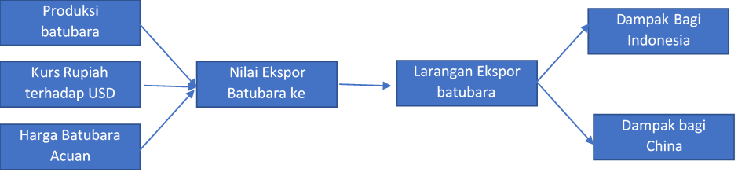
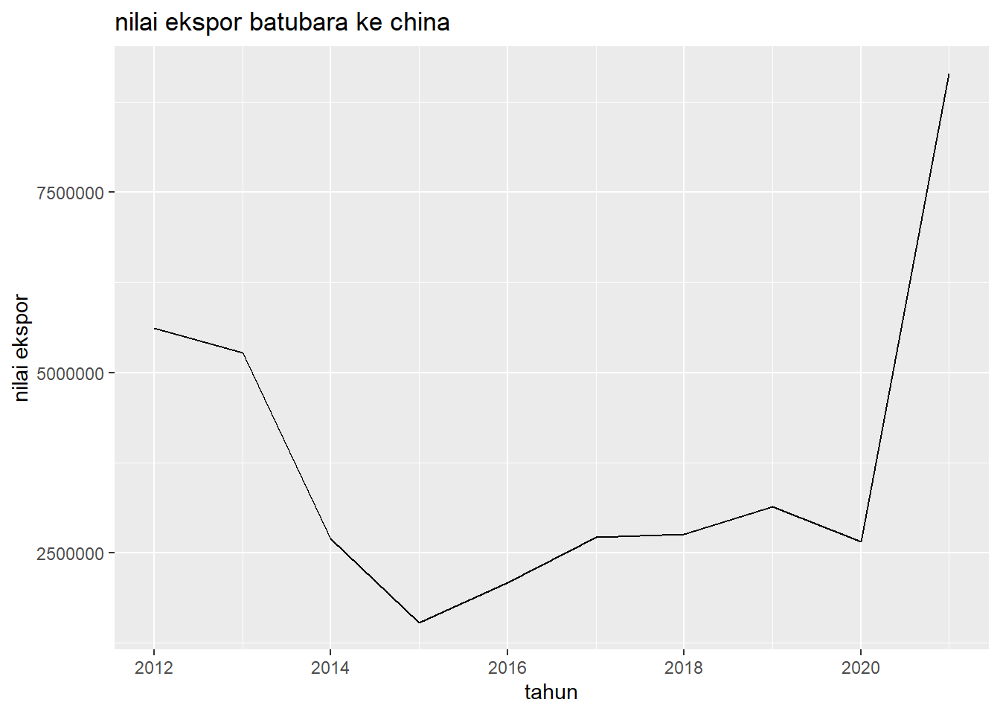
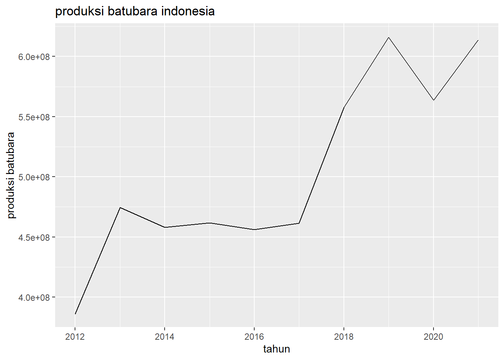
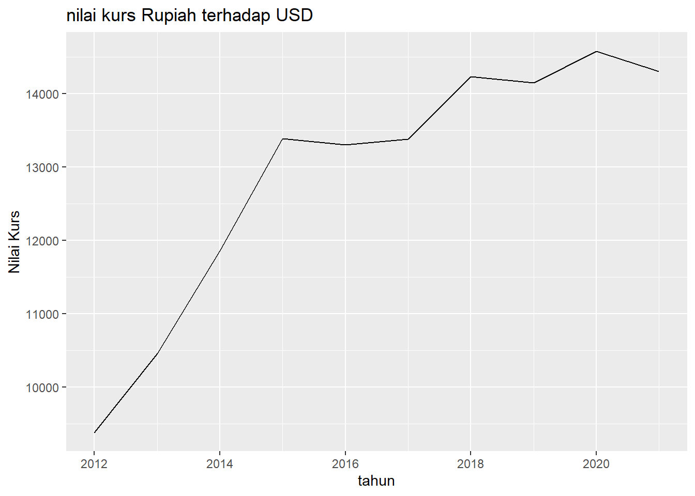
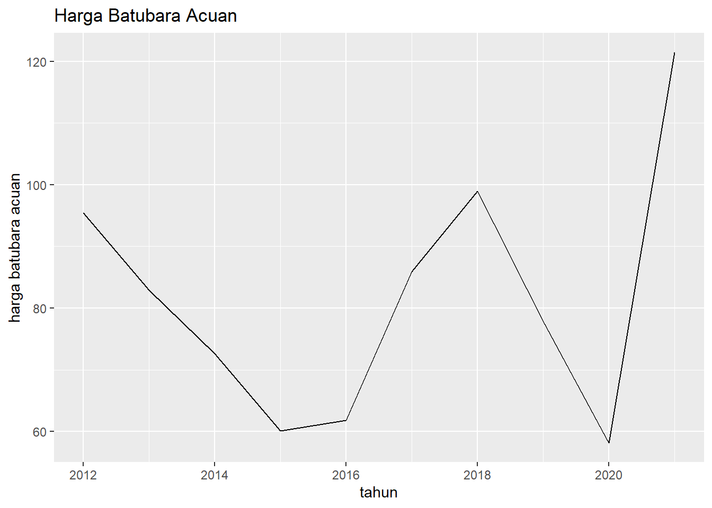
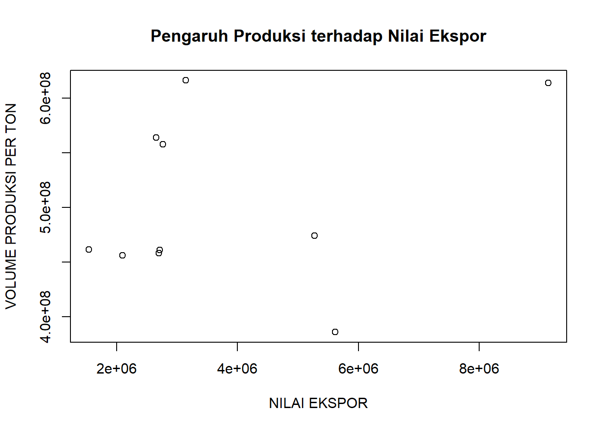
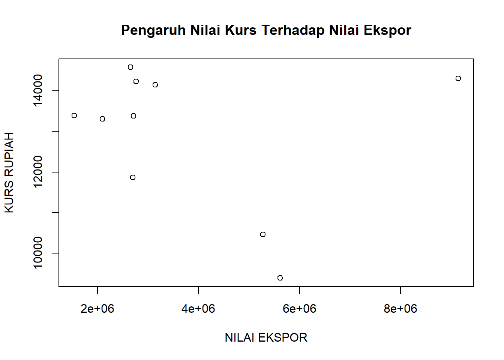
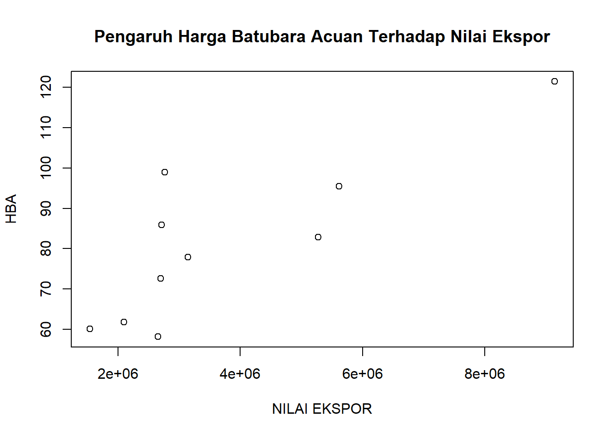

Analisis Dampak Larangan Sementara Ekspor Batubara dan Faktor yang Memengaruhi Nilai Ekspor Batu Bara Ke China Tahun 2012-2021
Metode Penelitian Politeknik APP Jakarta
Author
Chikal Marlina Putri
Published
January 20, 2023
l
1 Bab I Pendahuluan
1.1 1.1 Latar belakang
Indonesia sebagai negara berkembang melakukan perdagangan internasional untuk menumbuhkan perekonomiannya. Perdagangan internasional dilakukan dengan melakukan kegiatan ekspor dan impor suatu negara dengan negara lain untuk menciptakan hubungan internasional baik bilateral, regional, maupun multilateral. Namun di sisi lain, perdagangan internasional dapat menciptakan ketergantungan suatu negara dengan negara lain. Untuk menghindari sifat ketergantungan suatu negara dengan negara lain perlu dilakukan optimalisasi sumber daya yang dimiliki. Dengan sumber daya alam yang melimpah baik itu sumber daya migas maupun nonmigas Indonesia memiliki peluang yang sangat besar untuk mengembangkan sumber daya alam yang dimiliki.
Salah satu komoditas tambang unggulan indonesia adalah batubara. Batubara digunakan sebagai roda penggerak utama bagi industri baik itu sebagai pembangkit listrik maupun sebagai bahan bakar industri salah satunya untuk produksi baja dan semen. Indonesia merupakan salah satu produsen batubara dan eksportir utama di dunia.
Dilansir dari Badan Pusat Statistik Indonesia yang dirangkum oleh Kementerian Energi dan Sumber Daya Mineral melalui Handbook Of Energy & Economic Statistics Of Indonesia, produksi tertinggi Indonesia sejak tahun 2012 hingga tahun 2021 terdapat pada tahun 2019 dengan nilai 616.159.594 ton. Sedangkan nilai produksi terendah terjadi pada tahun 2012 dengan besaran 386.077.357 ton. Produksi batubara Indonesia cenderung fluktuatif namun mengalami tren peningkatan. Tingginya produksi batubara Indonesia dikarenakan melimpahnya cadangan batubara yang dimiliki Indonesia. Menurut data yang dilansir Kementerian ESDM dengan nilai cadangan sebesar 38,84 miliar ton yang dinilai cukup hingga 65 tahun ke depan.� Daerah yang memiliki cadangan batubara terbesar yaitu sebesar lebih dari 60% adalah Kalimantan yaitu sebesar 25,84 miliar ton dan selanjutnya adalah Sumatera yang memiliki cadangan dengan potensi yang tinggi yaitu sebesar 12,96 miliar ton. Tingginya cadangan dan produksi batubara Indonesia diimbangi dengan tingginya nilai ekspor.
Berdasarkan penelitian yang dilakukan Maulidina (2020), tingginya produksi batubara sejalan dengan meningkatnya ekspor batubara. Selain itu, penelitian oleh Rahmawan (2010), dan Pratama, Dicky et al (2016) hubungan produksi batubara dengan ekspor batubara memiliki hubungan yang berpengaruh secara signifikan.
Sumber: APBI
Berdasarkan data yang bersumber dari Asosiasi Pengusaha Batubara Indonesia (APBI), rata-rata jumlah ekspor batubara Indonesia selama 4 tahun sejak tahun 2018 hingga 2021 adalah sebesar 430,83 MT. Dalam 4 tahun berturut-turut China merupakan negara dengan jumlah batubara ekspor tertinggi. Hal itu dibuktikan oleh melonjaknya nilai ekspor batubara Indonesia ke China pada tahun 2021 yang seiring dengan tingginya jumlah batubara yang diekspor ke China
Tingginya ekspor batubara ke China dikarenakan konsumen batubara di China lebih menyukai batubara asal Indonesia. Hal itu dikarenakan kualitas batubara yang dihasilkan Indonesia memiliki kalori lebih rendah dan memiliki kandungan sulfur. Selain itu biaya yang dikeluarkan untuk impor batubara dari Indonesia lebih murah dibanding biaya logistic yang harus dikeluarkan China untuk hasil produksinya di daerah utara. Hal ini sejalan dengan konsep opportunity cost dimana suatu negara memilih mengimpor suatu komoditi daripada memproduksinya dengan jumlah besar untuk efisiensi biaya.
Namun tingginya nilai ekspor ke China membuat Indonesia menghadapi ancaman kekurangan pasokan batubara untuk kebutuhan bahan bakar pembangkit listrik dalam negeri. Realisasi penjualan untuk kebutuhan dalam negeri atau sering disebut Domestic Market Obligation (DM0) dibawah persentase yang diwajibkan. Akibatnya PLTU yang dikelola PLN terancam kekurangan pasokan. Ancaman kekurangan pasokan ini akan mengakibatkan 20 PLTU akan padam yang berdampak pada 10 juta pelanggan.
Untuk menghadapi ancaman pemadaman listrik akibat kekurangan pasokan batubara tersebut, pemerintah melakukan larangan sementara ekspor batubara pada 1 januari hingga 31 januari untuk pemenuhan kebutuhan pasokan batubara dalam negeri. selain pelarangan ekspor batubara, pemerintah meminta PLN untuk melakukan upaya efisiensi untuk mendukung penyediaan pasokan listrik bagi seluruh pelanggan dan masyarakat Indonesia. Tentunya dengan larangan sementara ekspor batubara akan berdampak bagi Indonesia maupun China.
1.2 1.2 Batasan Masalah
Batasan masalah pada penelitian ini diantaranya adalah variabel yang digunakan sudah umum digunakan dan akan menghasilkan data analisis yang tidak jauh berbeda dengan penelitian sebelumnya. Metode yang digunakan tidak menguji apakah hasil yang disimpulkan dapat menentukan pengambilan keputusan di masa yang akan datang karena hanya menguji melalui uji regresi linear berganda dan bukan uji OLS.
1.3 1.3 Rumusan masalah
Berdasarkan permasalahan yang sudah dijelaskan pada bagian pendahuluan maka dapat dirumuskan suatu masalah sebagai berikut:
Bagaimana dampak yang dirasakan Indonesia dan china akibat larangan ekspor batubara?
Bagaimana hubungan produksi batubara terhadap nilai ekspor batubara ke Tiongkok?
Bagaimana hubungan nilai kurs terhadap nilai ekspor batubara ke Tiongkok?
Bagaimana hubungan Harga Batubara Acuan (HBA) terhadap nilai ekspor batubara ke Tiongkok?
Adapun hipotesis awal berdasarkan rumusan masalah tersebut adalah sebagai berikut:
H1: Produksi batubara berpengaruh positif dan signifikan terhadap nilai ekspor batubara ke china
H2: Kurs rupiah berpengaruh negatif dan signifikan terhadap nilai ekspor batubara ke China
H3: Harga batubara acuan berpengaruh positif dan signifikan terhadap nilai ekspor batubara ke china
H4: Produksi batubara, kurs rupiah, dan harga batubara acuan secara bersamaan berpengaruh signifikan terhadap nilai ekspor batubara ke china
1.4 1.4 Tujuan dan manfaat penelitian
tujuan dari penelitian ini dirumuskan dalam hal berikut:
menganalisis dampak yang dirasakan Indonesia dan china akibat larangan ekspor batubara.
menganalisis hubungan produksi batubara terhadap nilai ekspor batubara ke Tiongkok.
menganalisis hubungan nilai kurs terhadap nilai ekspor batubara ke Tiongkok.
menganalisis hubungan Harga Batubara Acuan (HBA) terhadap nilai ekspor batubara ke Tiongkok.
Adapun manfaat yang diharapkan dari penelitian ini adalah bagi pembaca dapat memperluas wawasan mengenai faktor-faktor yang mempengaruhi nilai ekspor ke China. Dan bagi peneliti selanjutnya dapat menjadi sumber referensi untuk kajian penelitian sejenis di masa yang akan datang
2 Bab II Studi pustaka
2.1 2.1 Perdagangan Internasional
Perdagangan internasional adalah kegiatan perdagangan antara satu individu dengan individu lain, satu kelompok dengan kelompok lain, maupun satu individu dengan suatu kelompok yang melewati batas-batas negara. Menurut (Krugman & Obstfeld, 1994) alasan perdagangan internasional dapat memberikan keuntungan dalam kegiatan perdagangan yaitu pertama negara melakukan kegiatan perdagangan karena mereka berbeda satu sama lain, bangsa-bangsa sebagaimana individu-individu dapat memperoleh keuntungan dari perbedaan-perbedaan yang dimiliki masing-masing melalui suatu pengaturan di mana setiap pihak melakukan sesuatu dengan relatif lebih baik. alasan kedua ialah negara melakukan kegiatan perdagangan satu sama lain dengan tujuan mencapai skala ekonomi (economies of scale) dalam produksi, artinya adalah jika setiap negara hanya menghasilkan suatu barang dengan jumlah tertentu, mereka dapat menghasilkan barang – barang tersebut dengan skala yang lebih besar dan karenanya lebih efisien dibandingkan jika negara tersebut mencoba untuk memproduksi segala jenis barang.
2.2 2.2 Ekspor
Menurut Undang-Undang Republik Indonesia Nomor 17 Tahun 2006 Tentang Perubahan Atas Undang-Undang Nomor 10 Tahun 1995 Tentang Kepabeanan, ekspor adalah kegiatan mengeluarkan barang dari daerah pabean. Sedangkan daerah pabean adalah wilayah Republik Indonesia yang meliputi wilayah darat, perairan dan ruang udara diatasnya, serta tempat-tempat tertentu di Zona Ekonomi Eksklusif dan landas kontinen yang didalamnya berlaku Undang-Undang ini.
2.3 2.3 Produksi
Produksi adalah upaya proses untuk menambahkan nilai pada suatu barang. Menurut Joesron dan Fathorrozi (2003:77), produksi merupakan hasil akhir dari suatu proses atau kegiatan ekonomi dengan memanfaatkan beberapa masukan atau input yang akan menghasilkan suatu output. Adapun menurut penelitian yang dilakukan Maulidina (2020) menyatakan bahwa “Produksi adalah membuat, menghasilkan serta menciptakan. Sebuah produksi bisa dilakukan jika ada bahan yang dapat digunakan untuk proses produksi tersebut. Untuk dapat melakukan proses produksi ada unsur-unsur yang disebut dengan faktor produksi, seperti modal dalam segala bentuknya, sumber daya alam, tenaga kerja dan yang lainnya”
2.4 2.4 Nilai Tukar
Berdasarkan teori yang dikemukakan oleh Mankiw (2006) valuta asing atau dapat disebut kurs (exchange rate) adalah tingkat harga yang telah disepakati penduduk kedua negara untuk saling melakukan perdagangan. Kurs sering juga disebut dengan valas, yaitu nilai tukar mata uang suatu negara terhadap mata uang negara lain. Selain itu berdasarkan penelitian Maulidina (2020) Nilai tukar dibedakan menjadi dua, yaitu nilai tukar nominal dan nilai tukar riil. Masing-masing pengertiannya adalah nilai tukar nominal merupakan harga relatif dari mata uang dua negara, sedangkan nilai tukar riil merupakan harga relatif dari barang-barang di antara kedua negara. Nilai tukar ril menyatakan tingkat di mana seseorang bisa memperdagangkan barang-barang dari suatu negara untuk barang-barang dari negara lain, sehingga nilai tukar riil sering disebut terms of trade.
2.5 2.5 Harga Batubara Acuan
Secara umum pengertian harga adalah satuan nilai yang diberikan pada suatu komoditi sebagai informasi dari produsen/pemilik komoditi. Naik dan turunnya harga ditentukan oleh permintaan kondumen dan penawaran pasar. Fluktuatif harga batubara dipengaruhi juga oleh permintaan akibat permintaan musiman yang disebabkan cuaca musim dingin. Penetapan harga batubara ditetapkan melalui Harga Batubara Acuan yang ditetapkan oleh Kementerian ESDM dalam satuan USD.
2.6 2.6 Kerangka Pemikiran

3 Bab III Metode penelitian
3.1 3.1 Data
Data yang digunakan dalam penelitian ini adalah data sekunder yang bersifat kuantitatif. Adapun sumber-sumber data sekunder yang digunakan berasal dari sumber resmi, diantaranya adalah Badan Pusat Statistik (BPS), United Nations Comtrade Database, Kementerian ESDM Republik Indonesia, Asosiasi Pengusaha Batubara Indonesia (APBI), serta World Bank. Di mana data tersebut merupakan data time series sejak tahun 2012 hingga tahun 2021. Data-data sekunder yang diperoleh diantaranya adalah nilai ekspor batubara Indonesia ke China sebagai variabel tidak bebas (Y) dan variabel-variabel bebas sebagai faktor-faktor yang mempengaruhi nilai ekspor batubara Indonesia – China diantaranya adalah produksi batubara (X1), kurs (X2), dan harga batubara acuan (X3). Sehingga variabel-variabel tersebut dapat didefinisikan menggunakan variabel operasional sebagai berikut:
variabel Y merupakan variabel dependen atau variabel tidak bebas, yaitu Nilai Ekspor Batubara Indonesia – China dari periode tahun 2012 hingga tahun 2021 dalam satuan US Dollar. Data ini diperoleh dari UN Comtrade dalam satuan US Dollar per ton dengan HS Code 2701
variabel X1 merupakan variabel independen atau variabel bebas, yaitu Produksi Batubara Indonesia dari periode tahun 2012 hingga tahun 2021 dalam satuan ton. Data ini diperoleh dari Badan Pusat Statistik (BPS), Kementerian ESDM RI, dan Asosiasi Pengusaha Batubara Indonesia (APBI) dalam satuan ton.
variabel X2 merupakan variabel independen atau variabel bebas, yaitu Kurs Rupiah Terhadap US Dollar dari periode tahun 2012 hingga tahun 2021 dalam satuan Rupiah. Data ini diperoleh dari World Bank dalam satuan Rupiah.
variabel X3 merupakan variabel independen atau variabel bebas, yaitu Harga Batubara Acuan (HBA) dari periode tahun 2012 hingga tahun 2021 dalam satuan US Dollar Data ini diperoleh dari Kementerian ESDM RI dan Asosiasi Pengusaha Batubara Indonesia (APBI) dalam satuan US Dollar per Ton.
Berdasarkan definisi variabel operasional tersebut maka dapat dilampirkan bahwa data yang digunakan dalam penelitian ini adalah sebagai berikut
Tahun
Nilai Ekspor Batubara ke China dalam USD
(Y)
Volume Produksi per Ton
(X1)
Kurs Rupiah Terhadap Dollar
(X2)
Harga Batubara Acuan dalam USD/Ton
(X3
2012
5.613.990,086
386.077.357
9.386,63
95,48
2013
5.275.673,84
474.371.369
10.461,24
82,92
2014
2.697.627,601
458,096,707
11.865,21
72,62
2015
1.537.710,305
461,566,080
13.389,41
60,12
2016
2.092.059,095
456,197,775
13.308,33
61,835
2017
2.714.604,378
461.248.184
13.380,83
85,91
2018
2.760.599,4
557.772.940
14.236,94
98,96
2019
3.142.965,18
616.159.594
14.147,67
77,8
2020
2.652.686,704
563728255
14.582,2
58,17
2021
9.144.082,475
613.990256
14.308,14
121,47
3.2 3.2 Metode analisis
Metode yang digunakan dalam penelitian analisis nilai ekspor batubara Indonesia – China ini menggunakan metode kuantitatif dengan penjelasan deskriptif. Menggunakan R dan RStudio sebagai alat bantu pengolahan data dengan beberapa package diantaranya adalah readxl dan tidyverse.
-- Attaching packages --------------------------------------- tidyverse 1.3.2 --
v ggplot2 3.3.6 v purrr 0.3.5
v tibble 3.1.8 v dplyr 1.0.10
v tidyr 1.2.1 v stringr 1.4.1
v readr 2.1.3 v forcats 0.5.2
-- Conflicts ------------------------------------------ tidyverse_conflicts() --
x dplyr::filter() masks stats::filter()
x dplyr::lag() masks stats::lag()
Analisis data yang digunakan menggunakan metode analisis regresi linear berganda dengan mengolah data sekunder dari berbagai sumber. Analisis regresi linear berganda digunakan untuk melihat dan menguji hubungan variabel-variabel independen terhadap variabel dependen yang mempengaruhinya. Adapun model persamaan regresi linear berganda yang digunakan adalah sebagai berikut:
Y = Nilai ekspor batu bara Indonesia – China (USD) tahun 2012-2021
X1 = Produksi batu bara (Ton) tahun 2012-2021
X2 = Nilai Kurs (Rupiah) tahun 2012-2021
X3 = Harga Batubara Acuan dalam USD per ton tahun 2012-2021
??1, ??2, ??3 = Koefisien Regresi
??o = Intersep
� = error
Dengan model uji yang sudah dibuat maka selanjutnya akan dilakukan analisis koefisien masing-masing variabel regresi serta nilai konstanta yang dihasilkan, uji koefisien determinasi atau R2, Uji Parsial atau Uji-t, dan Uji Simultan atau Uji-F
4 Bab IV Pembahasan
4.1 4.1 Pembahasan masalah
dat<-read_excel('Tabel XY UAS.xlsx')
Gambar Nilai Ekspor Batubara tahun 2012-2021
ggplot(data=dat,aes(x=Tahun,y=Y)) +geom_line() +labs(title="nilai ekspor batubara ke china", x ="tahun", y ="nilai ekspor")

Gambar Produksi Batubara Tahun 2012-2021
ggplot(data=dat,aes(x=Tahun,y=X1)) +geom_line() +labs(title="produksi batubara indonesia", x ="tahun", y ="produksi batubara")

Gambar Nilai Kurs Rupiah Tahun 2012-2021
ggplot(data=dat,aes(x=Tahun,y=X2)) +geom_line() +labs(title="nilai kurs Rupiah terhadap USD", x ="tahun", y ="Nilai Kurs")

Gambar Harga Batubara Acuan 2012-2021
ggplot(data=dat,aes(x=Tahun,y=X3)) +geom_line() +labs(title="Harga Batubara Acuan", x ="tahun", y ="harga batubara acuan")

Ploting Produksi Batubara Terhadap Nilai Ekspor Batubara
plot(dat$Y,dat$X1,xlab ='NILAI EKSPOR',ylab ='VOLUME PRODUKSI PER TON',main='Pengaruh Produksi terhadap Nilai Ekspor')abline(lm(dat$Y~dat$X1))

Ploting Nilai Kurs Terhadap Nilai Ekspor Batubara
plot(dat$Y,dat$X2,xlab ='NILAI EKSPOR',ylab ='KURS RUPIAH',main='Pengaruh Nilai Kurs Terhadap Nilai Ekspor')abline(lm(dat$Y~dat$X2))

Ploting Harga Batubara Acuan Terhadap Nilai Ekspor Batubara
plot(dat$Y,dat$X3,xlab ='NILAI EKSPOR',ylab ='HBA',main='Pengaruh Harga Batubara Acuan Terhadap Nilai Ekspor')abline(lm(dat$Y~dat$X3))

4.2 4.2 Analisis masalah
4.2.1 4.2.1 Dampak Penetapan Larangan Sementara Ekspor Batubara
Penetapan larangan sementara ekspor batubara telah ditetapkan pemerintah pada 1 januari 2022. Hal itu diakibatkan kurangnya pasokan batubara untuk kebutuhan PLTU yang akan mengakibatkan pemadaman listrik pelanggan jika pasokan tidak terpenuhi. Dari pelarangan tersebut terdapat beberapa dampak yang dirasakan Indonesia selaku eksportir batubara maupun China sebagai importir batubara
Dampak yang akan muncul adalah kehilangan potensi pasar. Salah satunya adalah konsumen dari India, dikarenakan berdasarkan APBI india merupakan negara tujuan ekspor batubara Indonesia dengan proporsi 15% dari total ekspor pada tahun 2021.� Selain itu dalam jangka pendek akan terjadi lonjakan harga dikarenakan Indonesia merupakan salah satu negara pengekspor terbesar sehingga perubahan harga dan kondisi yang terjadi akan mempengaruhi harga komoditi batubara di dunia.
Meskipun china adalah negara importir terbesar komoditi batubara Indonesia, faktanya impor batubara hanya berkontribusi 10% dari total pasokan batubara China. Adapun kontribusi batubara impor Indonesia terhadap total impor batubara China adalah sebesar 61% sehingga larangan ekspor batubara yang ditetapkan oleh pemerintah Indonesia akan berpengaruh mengurangi 5,3% pasokan batubara thermal China. Dengan ditetapkannya larangan ekspor oleh pemerintah Indonesia, china meningkatkan impor batubara dari China. Selain itu China melakukan langkah strategis untuk meningkatkan produksi batubara. Dengan melakukan peningkatan kapasitas produksi, China percaya bahwa fluktuasi impor tidak akan berpengaruh terhadap pasokan batubara dalam negeri.
4.2.2 4.2.2 Faktor-Faktor yang Mempengaruhi Nilai Ekspor Batubara Indonesia ke China
Uji Regresi Linear Berganda
reg1<-lm(Y~X1+X2+X3,data=dat)summary(reg1)
Call:
lm(formula = Y ~ X1 + X2 + X3, data = dat)
Residuals:
Min 1Q Median 3Q Max
-2134258 -450497 127051 640660 1834208
Coefficients:
Estimate Std. Error t value Pr(>|t|)
(Intercept) -5.940e+05 3.965e+06 -0.150 0.8858
X1 1.403e-02 1.061e-02 1.322 0.2344
X2 -6.814e+02 4.471e+02 -1.524 0.1784
X3 7.441e+04 2.663e+04 2.794 0.0314 *
---
Signif. codes: 0 '***' 0.001 '**' 0.01 '*' 0.05 '.' 0.1 ' ' 1
Residual standard error: 1356000 on 6 degrees of freedom
Multiple R-squared: 0.7665, Adjusted R-squared: 0.6497
F-statistic: 6.564 on 3 and 6 DF, p-value: 0.02529
Berdasarkan hasil regresi diatas maka model persamaan regresi yang didapat adalah sebagai berikut:
Nilai konstanta memperoleh hasil sebesar a = - 594.000. hal itu menunjukkan bahwa jika tidak terdapat perubahan pada variabel-variabel bebas yaitu produksi batubara, nilai kurs, dan harga batubara acuan (X1 = X2 = X3) maka nilai ekspor batubara ke China akan mengalami penurunan sebesar 594.000 poin. Dalam arti lain, nilai ekspor batubara ke China akan menurun sebesar 594.000 poin dalam satu tahun tanpa adanya pengaruh dari produksi batubara, nilai kurs, dan harga batubara acuan
Produsi Batubara (X1)
Koefisien X1 atau variabel produksi batubara memperoleh hasil sebesar 0,01403 pada persamaan tersebut. Koefisien ini menunjukkan bahwa produksi batubara memiliki hubungan yang positif namun tidak signifikan berpengaruh terhadap nilai ekspor batubara ke China. Maka dapat diartikan, jika produksi batubara mengalami peningkatan sebesar 1 ton maka nilai ekspor akan naik sebesar 0,01403 USD dengan asumsi bahwa variabel nilai kurs dan harga batubara acuan konstan. Hal yang itu juga berlaku sebaliknya, jika produksi batubara mengalami penurunan sebesar 1 ton maka nilai ekspor batubara ke China akan mengalami penurunan sebesar 0,01403 USD
Nilai Kurs (X2)
Koefisien X2 atau variabel nilai kurs memperoleh hasil nilai koefisien sebesar – 681,4 pada persamaan tersebut. Koefisien ini menunjukkan hubungan yang negative dan tidak signifikan berpengaruh terhadap nilai ekspor batubara ke China. Maka dapat diartikan, jika nilai kurs mengalami peningkatan sebesar 1 Rupiah maka nilai ekspor batubara ke China akan mengalami penurunan sebesar 681,4 USD dengan asumsi bahwa variabel produksi dan harga batubara acuan konstan. Maka dari itu juga berlaku sebaliknya, jika nilai kurs mengalami penurunan sebesar 1 Rupiah maka nilai ekspor batubara ke China akan mengalami peningkatan sebesar 681,4 USD
Harga Batubara Acuan (X3)
Koefisien X3 atau variabel harga batubara acuan memperoleh hasil sebesar 74.410 pada persamaan tersebut. Koefisien ini menunjukkan hubungan yang positif dan signifikan berpengaruh terhadap nilai ekspor batubara ke China. Maka dapat diartikan bahwa jika harga batubara acuan mengalami peningkatan sebesar 1 USD maka nilai ekspor batubara ke China akan mengalami peninkatan sebesar 74.410 USD dengan asumsi bahwa variabel produksi dan nilai kurs konstan. Hal itu juga berlaku sebaliknya, jika harga batubara acuan mengalami penurunan sebesar 1 USD maka nilai ekspor batubara akan mengalami penurunan sebesar 74.410 USD
Koefisien Determinasi
Nilai koefisien determinasi dalam regresi linear berganda digunakan untuk melihat besaran kontribsi variabel-variabel bebas terhadap variabel tak bebas. Adapun nilai koefisien determinasi yang didapatkan adalah sebesar 0,7665. Hal itu berarti 76,65% variabel nilai ekspor batubara ke China dipengaruhi oleh variabel produksi, nilai kurs, dan harga batubara acuan. Dan 23,35% dijelaskan oleh faktor lain diluar variabel bebas yang dijelaskan.
Uji Parsial (Uji-t)
Uji parsial atau uji-t adalah uji yang digunakan untuk mengetahui apakah hubungan masing-masing variabel bebas yaitu produksi, nilai kurs, dan harga batubara acuan berpengaruh signifikan secara parsial terhadap variabel tak bebas dalam hal ini adalah nilai ekspor batubara ke China. Dengan nilai t table sebesar 2,365 dan taraf signifikan sebesar 0,05 maka hipotesis yang dapat dirumuskan adalah
H0 = Variabel bebas memiliki hubungan yang tidak signifikan
H1 = Variabel bebas memiliki hubungan yang signifikan
Dengan ketentuan:
jika nilai probabilitas > tingkat signifikan, maka H0 diterima dan H1 ditolak
jika nilai probabilitas < tingkat signifikan, maka H0 ditolak dan H1 diterima
Atau
Jika t hitung < t tabel, maka H0 diterima dan H1 ditolak
Jika t hitung > t table, maka H0 ditolak dan H1 diterima
Maka berdasarkan hasil regresi linear berganda, dapat dijelaskan bahwa:
Variabel X1 atau produksi batubara mempunyai tingkat signifikansi lebih besar dari taraf signifikan (0,2344 > 0,05) atau t hitung lebih kecil dari t table (1,322� 2,365). Maka H0 diterima dan H1 ditolak. Sehingga dapat diartikan bahwa variabel produksi batubara berpengaruh namun tidak signifikan secara parsial terhadap nilai ekspor batubara ke China
Variabel X2 atau nilai kurs mempunyai tingkat signifikansi lebih besar dari taraf signifikan (0,1784 > 0,05) atau t hitung lebih kecil dari t table (1,524� 2,365). Maka H0 diterima dan H1 ditolak. Sehingga dapat diartikan bahwa variabel nilai kurs berpengaruh namun tidak signifikan secara parsial terhadap nilai ekspor batubara ke China
Variabel X3 atau produksi batubara mempunyai tingkat signifikansi lebih kecil dari taraf signifikan (0,0314 < 0,05) atau t hitung lebih besar dari t table (2,794 > 2,365). Maka H0 ditolak dan H1 diterima. Sehingga dapat diartikan bahwa variabel produksi batubara berpengaruh signifikan secara parsial terhadap nilai ekspor batubara ke China
Uji simultan atau uji F
Uji simultan atau uji-F adalah uji yang digunakan untuk mengetahui apakah hubungan variabel bebas yaitu produksi, nilai kurs, dan harga batubara acuan berpengaruh signifikan secara bersama-sama atau simultan terhadap variabel tak bebas dalam hal ini adalah nilai ekspor batubara ke China. Dengan nilai F table sebesar 4,74 maka hipotesis yang dapat dirumuskan adalah
H0 = Variabel bebas memiliki hubungan yang tidak signifikan
H1 = Variabel bebas memiliki hubungan yang signifikan
Dengan ketentuan:
Jika F hitung < F tabel, maka H0 diterima dan H1 ditolak
Jika F hitung > F table, maka H0 ditolak dan H1 diterima
Maka berdasarkan table regresi linear berganda, diperoleh F hitung lebih besar dari F table (6,564 > 4,74) sehingga disimpulkan H0 ditolak dan H1 diterima yang artinya variabel produksi, nilai kurs, dan harga batubara acuan berpengaruh signifikan secara bersama-sama terhadap nilai ekspor batubara ke China.
Pengaruh Faktor Produksi Batubara Terhadap Nilai Ekspor Batubara Ke China Berdasarkan Nilai Koefisien Dan Uji Parisal
Berdasarkan hasil uji regresi linear berganda, koefisien X1 atau variabel produksi batubara memperoleh hasil sebesar 0,01403 dan menunjukkan bahwa produksi batubara memiliki hubungan yang positif namun tidak signifikan berpengaruh terhadap nilai ekspor batubara ke China. Selain itu, variabel produksi batubara berdasarkan uji parsial atau uji t mempunyai nilai signifikan yang lebih besar dari taraf signifikan menggunakan tingkat signifikan = 0,005 sehingga 0,2344 > 0,05 maka artinya produksi batubara berpengaruh tidak signifikan secara parsial mempengaruhi nilai ekspor batubara ke China.
Pengaruh produksi batu bara terhadap ekspor batubara juga didukung dengan hasil penelitian yang dilakukan oleh Rahmawan (2019), Dicky Pratama dan Yulianto (2016), serta Kumbayan dan Swara (2015). Berdasarkan beberapa penelitian terebut produksi batubara berbanding lurus dengan ekspor batubara dan signifikan secara parsial berpengaruh terhadap ekspor batubara. Sehingga penelitian ini menunjang penelitian mengenai pengaruh produksi batubara terhadap nilai ekspor batubara.
Pengaruh Faktor Kurs Rupiah Batubara Terhadap Nilai Ekspor Batubara Ke China Berdasarkan Nilai Koefisien Dan Uji Parisal
Berdasarkan hasil uji regresi linear berganda, koefisien X2 atau variabel kurs memperoleh hasil sebesar – 681,4 dan menunjukkan bahwa kurs memiliki hubungan yang negatif dan tidak signifikan berpengaruh secara parsial terhadap nilai ekspor batubara ke China. Selain itu, variabel kurs berdasarkan uji parsial atau uji t mempunyai nilai signifikan yang lebih besar dari taraf signifikan menggunakan tingkat signifikan = 0,005 sehingga 0,1784 > 0,05 maka artinya kursa berpengaruh tidak signifikan secara parsial mempengaruhi nilai ekspor batubara ke China.
Hasil penelitian ini mendukung beberapa penelitian yang telah dilakukan sebelumnya yaitu Dicky Pratama dan Yulianto (2016) dan Theresia Anindita dan Syaputra (2017) yang menyatakan bahwa kurs berpengaruh tidak signifikan secara parsial terhadap ekspor batubara.
Pengaruh Faktor Harga Batubara Acuan Terhadap Nilai Ekspor Batubara Ke China Berdasarkan Nilai Koefisien Dan Uji Parisal
Berdasarkan hasil uji regresi linear berganda, koefisien X3 atau variabel harga acuan batubara memperoleh hasil sebesar 74.410 dan menunjukkan bahwa produksi batubara memiliki hubungan yang positif dan signifikan berpengaruh secara parsial terhadap nilai ekspor batubara ke China. Selain itu, variabel harga acuan batubara berdasarkan uji parsial atau uji t mempunyai nilai signifikan yang lebih kecil dari taraf signifikan menggunakan tingkat signifikan = 0,005 sehingga 0,0314 < 0,05 maka artinya harga acuan abtubara berpengaruh signifikan secara parsial mempengaruhi nilai ekspor batubara ke China.
Hasil penelitian ini memperkuat hasil penelitian sebelumnya diantaranya Rahmawan (2019) bahwa harga batubara berpengaruh positif dan signifikan terhadap ekspor batubara.
5 Bab V Kesimpulan
Berdasarkan hasil analisis regresi linear berganda dan pembahasan dampak larangan ekspor maka dapat disimpulkan bahwa:
Dampak larangan sementara ekspor batubara yang diakibatkan oleh kurangnya pasokan batubara untuk PLTU berdampak pada kehilangan pangsa pasar ekspor akibat negara China juga mampu memproduksi batubara dan tidak terpengaruh terhadap fluktuasi kondisi impor baik dari negara lain maupun dari Indonesia.
Pengaruh variabel produksi batubara bernilai positif dan tidak signifikan terhadap nilai ekspor batubara ke China berdasarkan uji parsial. Artinya semakin tinggi produksi batubara maka semakin tinggi nilai ekspor batubara ke China
Pengaruh variabel kurs rupiah bernilai negatif dan tidak signifikan terhadap nilai ekspor batubara ke China berdasarkan uji parsial. Artinya semakin rendahnya kurs rupiah maka semakin tinggi nilai ekspor batubara ke China
Pengaruh variabel harga batubara acuan bernilai positif dan signifikan terhadap nilai ekspor batubara ke China berdasarkan uji parsial. Artinya semakin tinggi produksi batubara maka semakin tinggi nilai ekspor batubara ke China
Pengaruh variabel produksi, kurs rupiah, dan harga batubara acuan secara simultan atau bersama-sama secara signifikan berpengaruh terhadap nilai ekspor batubara ke China
Anindita, T., & Syaputra, A. A. (2018). ANALISIS PENGARUH KURS USD, HARGA BATUBARA ACUAN, DAN VOLUME PRODUKSI TERHADAP VOLUME EKSPOR PADA PT. BUKIT ASAM (PERSERO) TBK. Jurnal Manajemen Industri dan Logistik, 1(2), 111–120.
Kumbayana, I. G. B., & Swara, W. Y. (2015). Pengaruh Jumlah Produksi, Harga Ekspor, Dan Kurs Dollar Amerika Serikat Terhadap Volume Ekspor Batu Bara Indonesia Tahun 1992-2012.4(2).
Maulidina, R. S. (2020). ANALISIS PENGARUH VOLUME PRODUKSI BATUBARA, NILAI TUKAR, INFLASI DAN PRODUK DOMESTIK BRUTO TERHADAP VOLUME EKSPOR BATUBARA INDONESIA TAHUN 1996-2019. UNIVERSITAS ISLAM INDONESIA.
P. R. Kugman, & M. Obstfeld. (1994). Ekonomi Internasional. PT Raja Grafindo Persada.
Pratama, D., Suharyono, & Yulianto, E. (2016). ANALISIS NILAI TUKAR RUPIAH, PRODUKSI BATUBARA, PERMINTAAN BATUBARA DALAM NEGERI DAN HARGA BATUBARA ACUAN TERHADAP VOLUME EKSPOR BATUBARA INDONESIA. Jurnal Administrasi Bisnis (JAB), 33(2), 145–153.
RAHMAWAN, E. P. (2019). ANALISIS PENGARUH PRODUKSI BATUBARA, HARGABATUBARA ACUAN DAN NILAI TUKAR RUPIAH TERHADAP VOLUME EKSPOR BATUBARA INDONESIA (Studi Pada Ekspor Batubara Indonesia Tahun 2001-2017). UNIVERSITAS MUHAMMADIYAH SURAKARTA.
Tambunan, F. S., Purba, E. F., & Siahaan, L. (2021). ANALISIS PENGARUH KURS, HARGA MINYAK MENTAH DUNIA, DAN PDB PER KAPITA SINGAPURA TERHADAP VOLUME EKSPOR MINYAK MENTAH INDONESIA KE SINGAPURA. Journal of Economics and Business, 3(1), 10–22.